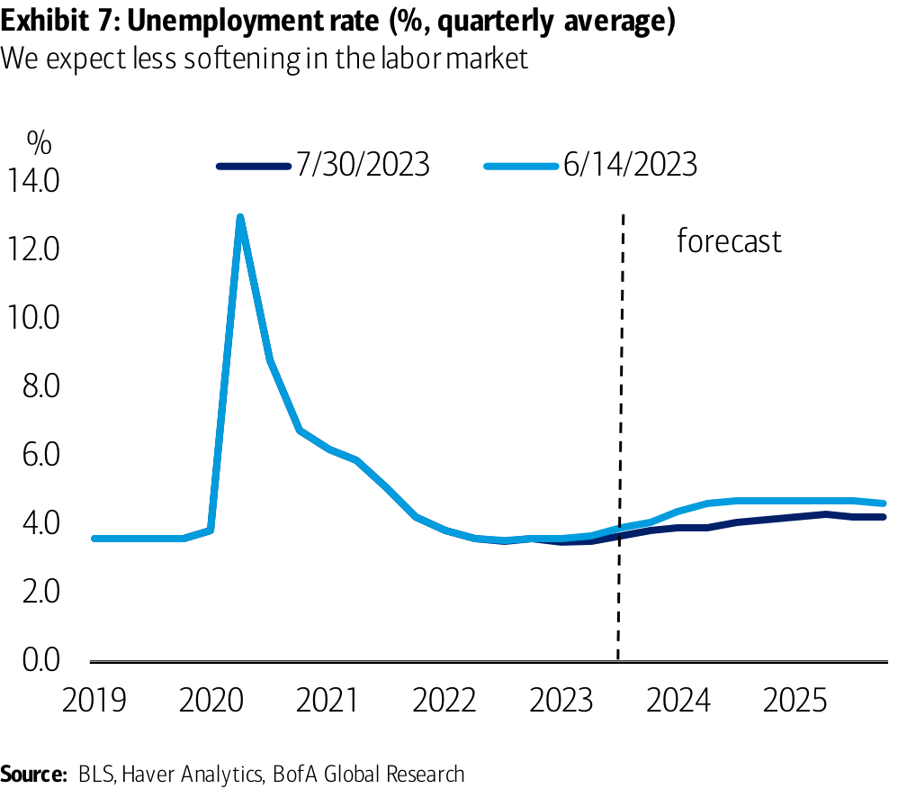
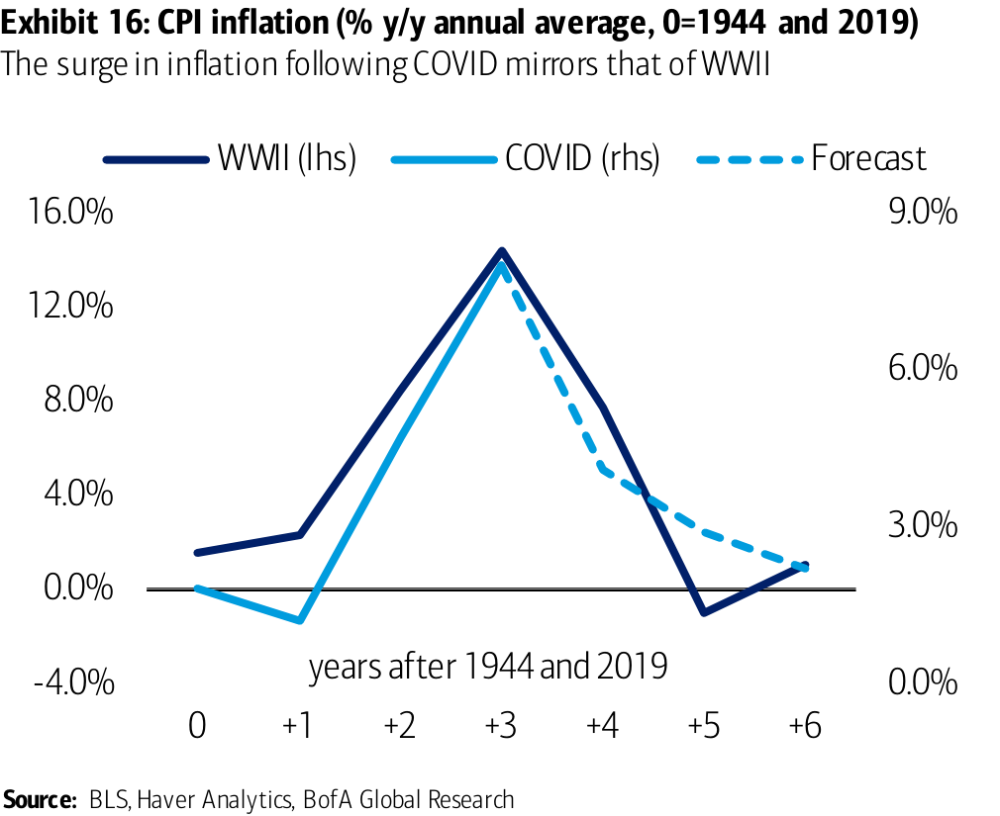

Accessible version
US Economic Viewpoint
US outlook: Imagine no recession, it’s easy if you try
What’s out: mild recession Recent incoming data has made us reassess our prior view that a mild recession in 2024 is the most likely outcome for the US economy. Growth in economic activity over the past three quarters has averaged 2.3%, the unemployment rate has remained near all- time lows, and wage and price pressures are moving in the right direction, albeit gradually. Cyclically sensitive sectors have shown signs of stabilization.
What’s in: soft landing, no recession We revise our outlook for the US economy in favor of a soft landing, where growth falls below trend in 2024, but remains positive throughout our forecast horizon. We forecast US GDP growth of 2.0% (4Q/4Q) this year, 0.7% in 2024, and 1.8% in 2025. This is about 0.5pp and 0.7pp higher in 2023 and 2024 than we assumed previously.
We still expect inflation to decelerate and remain on a path to 2.0%, but with a stronger forecast for activity and labor markets, inflation falls more gradually. We now have PCE inflation falling to 2.0% y/y in 2H 2025, about two quarters later than in our prior mild recession baseline. The four-quarter change in core PCE inflation is 3.5% in 2023 (unchanged), 2.8% in 2024 (up 0.4pp), and 2.2% in 2025 (up 0.1pp).
We look for the unemployment rate to rise to a peak of 4.3% in 1Q 2025, versus 4.7% in 4Q 2024 previously. The labor market should continue to cool and employment growth should moderate, but not as much as we forecasted previously.
A cautiously cutting Fed If our outlook proves true, this would be good news for the Fed. We still expect one additional 25bp rate hike in September for a terminal target range of 5.50-5.75%, though it may slip to November. We now expect the first rate cut in June 2024. We also expect balance sheet runoff (quantitative tightening) to end at the same time, though the Fed has mentioned that it may consider letting its balance sheet run off even after the cutting cycle begins, suggesting risks to a longer runoff period.
The main difference between our new forecast and prior forecast is in the pace of rate cuts, which we now think will come more slowly. We expect quarterly 25bp reductions in the policy rate for a total of 75bp of rate cuts in 2024 and 100bp of cuts in 2025.
Our Fed outlook also stands apart from market expectations of rate cuts. Markets, which must price in distributions of outcomes and not modal paths, are putting low weight on additional rate hikes, but more weight on a rapid cutting cycle should the economy weaken. In recent months prices on federal funds futures contracts have implied somewhere between 120-160bp of rate cuts in 2024. If our outlook proves accurate, many of these rate cuts would be taken out over time. This is consistent with guidance from our US rates strategy team which has encouraged clients to remain underweight the front end and fade the extent of rate cuts early in ’ 24.
====================================================================================================
2
US Economic Viewpoint | 02 August 2023
====================================================================================================
What’s new Further evidence of resiliency in activity… The advance estimate of US GDP showed the economy grew at a 2.4% q/q saar rate in 2Q 2023. It was not that long ago that the Bureau of Economic Analysis (BEA) revised higher the third estimate of 1Q US GDP growth to 2.0%. The US economy has now grown at a 2.0% or better quarterly annualized rate for the prior four quarters. Whereas the as-reported data was pointing to a slowdown in activity earlier this year, revisions took this signal away and, together with recent data, point to ongoing resilience.
The combination of resiliency in final sales at 2.3% q/q saar and the outturn on inventories points to a carry forward effect on growth into the second half of the year. As a result, we have revised higher our outlook for growth in economic activity this year and next, and no longer expect the economy to fall into a mild recession. In our most recent update of the outlook in mid-June, a better risk backdrop, evidence of strength in business spending stemming from previously passed fiscal spending packages, and the rebound in labor supply led us to push out, and soften, our expected slowdown in the US economy. Our current revisions move even further in this direction.
…alongside diminishing wage and price pressures… What is interesting to us and, in part, is what is behind our revised outlook for the US economy, is that resiliency in activity and labor markets has not prevented softening in inflation and wages. The GDP price index and the core PCE price index slowed to 2.2% and 3.8% from 4.1% and 4.9%, respectively, in the advance estimate of 2Q US GDP. The core PCE price index rose at the slowest pace in more than two years.
On wages, the Employment Cost Index (ECI) printed slightly below expectations with a 1.0% q/q increase in 2Q, down from 1.2% in the prior month. As a result, the y/y rate fell four-tenths to 4.5%, down from a peak of 5.1%. The ECI data confirm the moderation in wage growth in other wage measures including average hourly earnings, the Atlanta Fed wage tracker, and Indeed ’ s wage tracker – a measure of posted-job wage inflation.
BofA GLOBAL RESEARCH
BofA GLOBAL RESEARCH
US Economic Viewpoint | 02 August 2023
Exhibit 1: ECI: wages vs. Benefits (% y/y) Annual growth in wages and benefits has seemingly peaked
Exhibit 2: Private wages: all occupations vs. ex incentive occupations
====================================================================================================
US outlook summary
4 US Economic Viewpoint | 02 August 2023
BofA GLOBAL RESEARCH
Exhibit 3: BofA US economic outlook We now expect a soft landing for the US economy
====================================================================================================
Exhibit 4: Real GDP growth (q/q % change saar) Growth to slow but remain positive through 2025
Exhibit 5: Contributions to quarterly GDP growth (percentage points)
Exhibit 6: Real GDP growth (q/q % change saar)
Exhibit 7: Unemployment rate (%, quarterly average)
Exhibit 8: Headline PCE inflation (y/y % change)
Exhibit 9: Target federal funds rate (midpoint, % end of period)
====================================================================================================
…and evidence cyclical sectors are stabilizing
What’s next Soft landing more likely than mild recession
6
====================================================================================================
A slower decline in inflation
Exhibit 10: Headline and core PCE inflation (% change y/y) We still expect inflation to fall back to 2%, but more gradually than before
Exhibit 11: Core goods and core services in PCE (% change y/y)
====================================================================================================
Fed policy: Higher for longer, a cautious easing cycle
In a soft landing, the Fed will be a “cautious cutter”
75bp of rate cuts in 2024, 100bp in 2025, normalization in 2026
8
====================================================================================================
Less of a dent in the labor market
Exhibit 12: Labor force participation versus trend (%) The labor force participation rate has moved above its long-run trend.
Exhibit 13: Federal funds target rate, pricing and forecasts (%)
====================================================================================================
In focus: fiscal policy CHIPS in
10
Exhibit 14: Contribution to q/q annualized growth in nonresidential structures Investment in manufacturing structures has driven growth in structures of late
Exhibit 15: Contributions to q/q annualized growth in government
====================================================================================================
In focus: more like WWII than post-WWII
Exhibit 16: CPI inflation (% y/y annual average, 0=1944 and 2019) The surge in inflation following COVID mirrors that of WWII
Exhibit 17: Saving as a share of national income (0=1940 and 2019)
====================================================================================================
Risks and caveats
Alternative scenarios for the US economy
Pessimistic scenario: modest recession as tighter credit conditions combine
with higher headline inflation to slow consumer and business spending
12
====================================================================================================
Optimistic scenario: an improved risk backdrop and pickup in potential growth
====================================================================================================
US outlook snapshot with alternatives
14
Exhibit 18: US outlook snapshot with alternatives We now think a soft landing is more likely than not
====================================================================================================